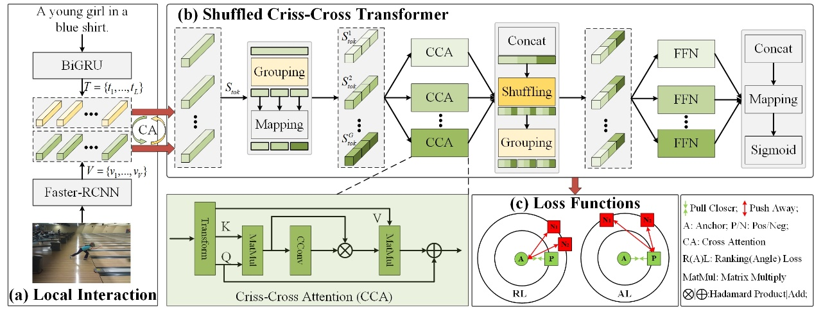
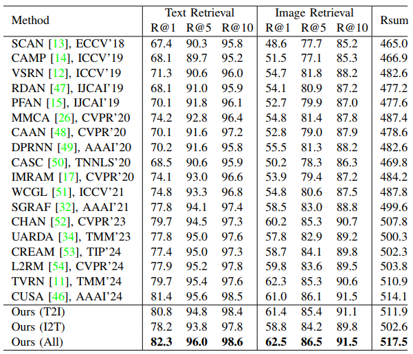

Similarity Shuffled Criss-cross Transformer with Angle Loss for Image-text Matching
Ran Chen, Taiyi Su, Hanli Wang, Zhangkai Ni
Overview:
Image-text matching aims to retrieve images from the guidance of textual queries or retrieve text expressions with the help of images. Existing Transformer-based methods compute attention for all tokens and thus suffer from redundant information, resulting in inadequate focus on salient features. On the other hand, the widely adopted bidirectional ranking loss in this task overlooks the importance of expanding the distance between positive and negative samples, leading to the misclassification of negative samples as positive ones. In this work, we propose Similarity Shuffled Criss-cross Transformer (SSCT) with angle loss for image-text matching. Specifically, a Grouping-Shuffling operation is introduced to better distinguish salient features from redundant information, bypassing the need for fully connected mapping. The Grouping-Shuffling operation establishes channel dependencies across different groups of feature representations, enhancing salient features while suppressing unimportant ones. Then, a Criss-cross Attention that equips self-attention with a novel Criss-cross Convolution is proposed to make isolated information cooperatively express integral semantics. Moreover, we introduce a novel angle loss to expand the distances between positive and negative samples by enlarging the corresponding angles with the anchor. Extensive experiments on the benchmark datasets of MSCOCO and Flickr30K demonstrate that the proposed methods achieve superior performances compared to state-of-the-art approaches.
Method:
The overview of the proposed SSCT is depicted in Fig. 1. Specifically, SSCT integrates with three key components. Grouping-Shuffling operation divides similarity representations into several groups along the channel dimension, with mapping confined within each group. Subsequently, a shuffling operation facilitates communication between features across different groups. This strategy enables SSCT to capture diverse feature representations within each group while establishing channel dependencies across groups, thereby enhancing salient features and suppressing less relevant ones. Criss-cross Attention that equips the inherent self-attention with a novel Criss-cross Convolution is designed to correlate isolated pieces of information, enabling them to collectively express integral and coherent semantics. Unlike conventional squared convolution that gathers neighboring information from dense visual feature maps, Criss-cross Convolution is designed to capture orthogonal bar-type information. This approach is particularly suited to the sparse similarity maps generated by self-attention, allowing the model to focus on relevant information while avoiding the inclusion of irrelevant data. Angle loss takes into account the learning status of negative samples and seeks to expand the angle degree of negative-anchor-positive samples. By enlarging this angle, the distance between positive and negative samples naturally increases, in accordance with the side-angle relationship theorem, which states that a larger angle corresponds to a longer side. Angle loss introduces an additional constraint that enhances model learning by incorporating angle-based information.

Fig. 1. Overview of the proposed SSCT framework.
Result:
The comparison results on Flickr30K between SSCT and the state-of-the-art image-text matching methods are shown in Table 1. The image-text matching results on MSCOCO 1K and MSCOCO 5K are listed in Table 2 and Table 3, respectively.
Table 1. Comparison with state-of-the-art image-text matching methods on Flickr30K.

Table 2. Comparison with state-of-the-art image-text matching methods on MSCOCO 1K.

Table 3. Comparison with state-of-the-art image-text matching methods on MSCOCO 5K.

Figure 2 visualizes the mutual retrieval process using the proposed SSCT, showcasing the top three retrieved items for both image-to-text and text-to-image queries. The results demonstrate that the top-1 retrieved items are accurate in both retrieval directions, highlighting the effectiveness of SSCT. Notably, SSCT excels at capturing complex matching patterns. For example, in the second image-to-text retrieval case, SSCT not only identifies the vase and flowers present in all retrieved items but also recognizes a picture partially obscured by the vase.

Fig. 2. Visualization of image-text mutual retrieval by using SSCT.
Source Code:
Original illustration: image placeholderSSCT1.0.zip
Citation:
Please cite the following paper if you find this work useful:
Ran Chen, Taiyi Su, Hanli Wang, and Zhangkai Ni, Similarity Shuffled Criss-cross Transformer with Angle Loss for Image-text Matching, IEEE Transactions on Multimedia, accepted, 2025.